6 月 19 日：Seeing Before Reasoning 等视觉表征论文归档
本页按日期归档近期论文，保留优先级、主题、来源与方法线索，方便回看同一批工作的研究脉络。
先读 Seeing Before Reasoning。把 OPSD 拆成图像感知老师和推理老师，直接约束 MLLM 先看图再推理。 其余论文按 P1/P2 与主题顺序扫读，重点看方法图、消融设置和是否能迁移到通用视觉表征。
论文索引
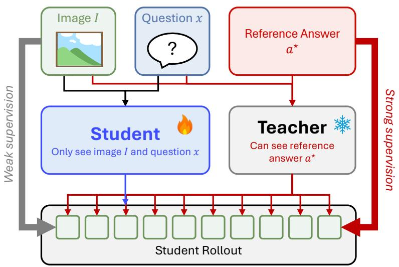
Seeing Before Reasoning: Decoupling Perception and Reasoning for Shortcut-Resilient Multimodal On-Policy Self-Distillation
高相关；详见方法、贡献和实验边界。
方法：把 OPSD 拆成图像感知老师和推理老师，直接约束 MLLM 先看图再推理
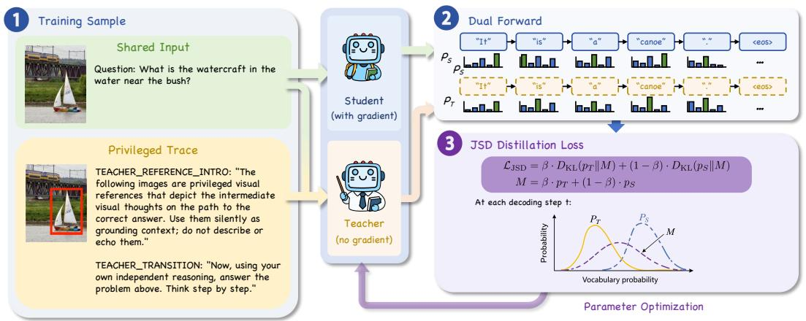
Visual-OPSD: Cross-Modal On-Policy Self-Distillation for Efficient Unified Multimodal Reasoning
高相关；详见方法、贡献和实验边界。
方法：把昂贵 visual thoughts 的隐式推理能力蒸馏到 text-only student，适合跟 VLM 视觉 latent reasoning 一起看
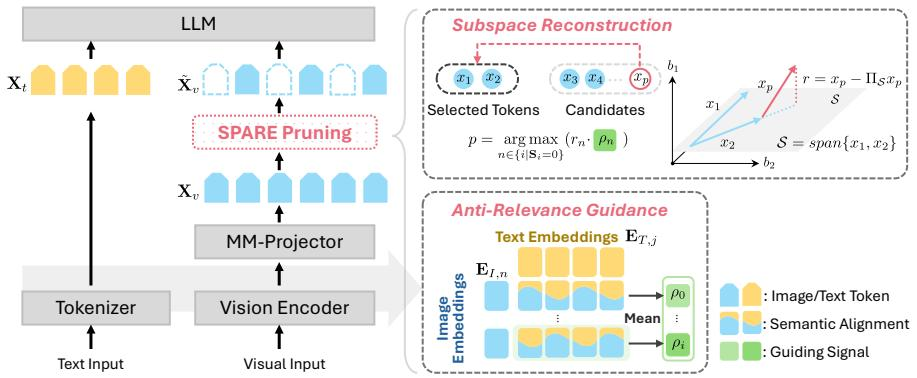
Moving Beyond Diversity: Visual Token Pruning as Subspace Reconstruction for Efficient VLMs
高相关；详见方法、贡献和实验边界。
方法：把视觉 token pruning 从多样性最大化改成子空间重建误差最小化，直接影响 VLM 视觉表征保真
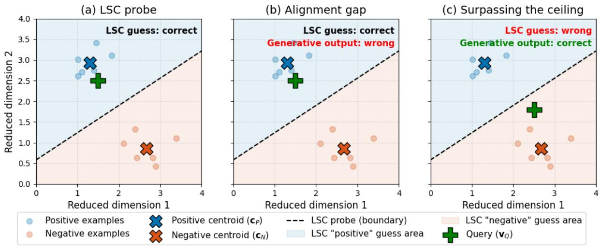
Beyond the Linear Separability Ceiling: Aligning Representations in VLMs
中高相关；详见方法、贡献和实验边界。
方法：用线性可分性上界诊断 VLM 是感知失败还是推理失败，并用 contrastive objective 修正视觉 manifold
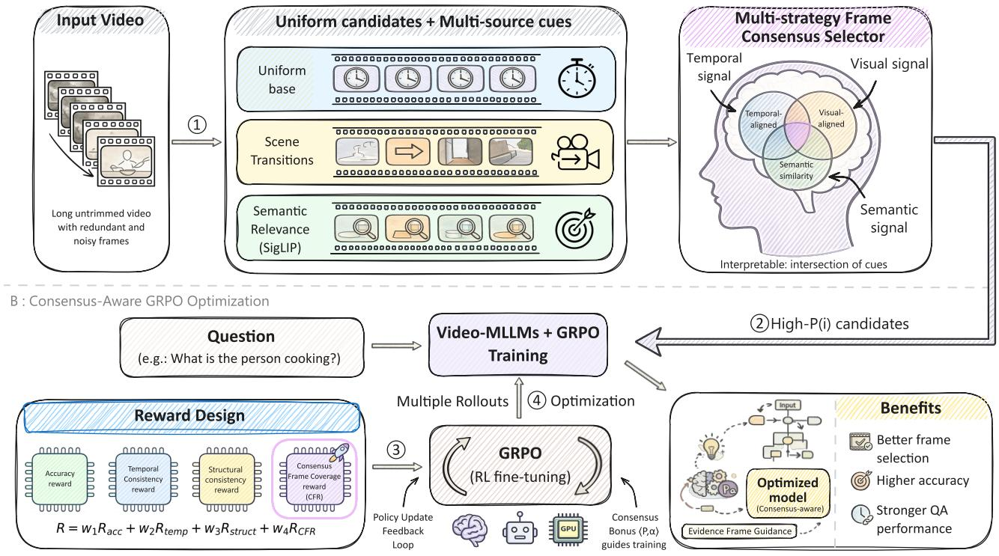
Reasoning as Intersection: Consensus-Frame Alignment for Visual Focus in Video-MLLMs
中高相关；详见方法、贡献和实验边界。
方法：用视频内生线索构造 consensus frame prior，让 Video-MLLM 学会把推理奖励绑定到证据帧
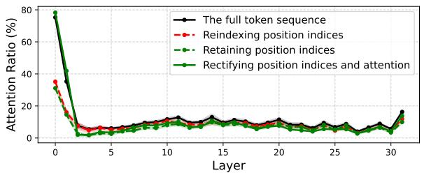
Improving Visual Token Reduction via Rectifying Distortions for Efficient Multimodal LLM Inference
中高相关；详见方法、贡献和实验边界。
方法：校准视觉 token reduction 后的位置/注意力扭曲，是 SPARE 的强相关对照更新项
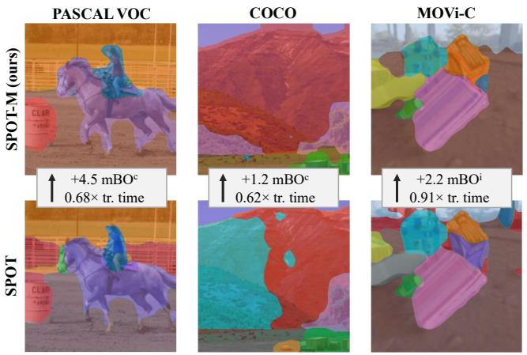
MUFASA: A Multi-Layer Framework for Slot Attention
中高相关；详见方法、贡献和实验边界。
方法：把 unsupervised object-centric slot attention 从单层 ViT feature 扩展到多层语义融合
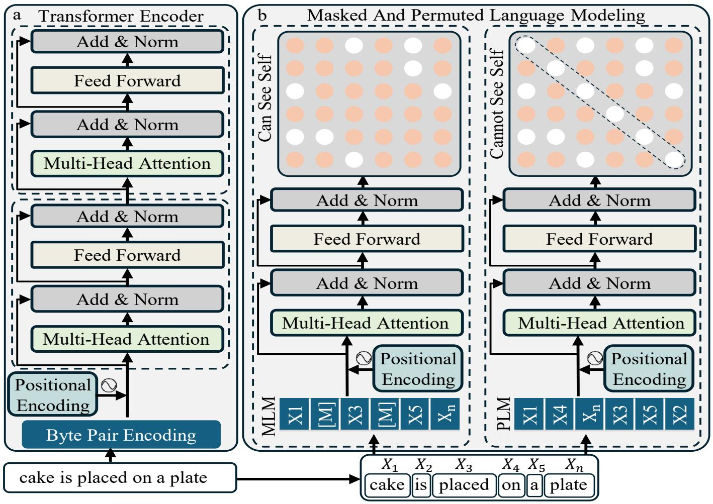
DREAM: Extending Vision-Language Models with Dual-Objective Encoding for Cross-Modal Retrieval
中高相关；详见方法、贡献和实验边界。
方法：双路径 representation enhancement/alignment 做视频检索，方法上涉及视觉-语言表征预训练
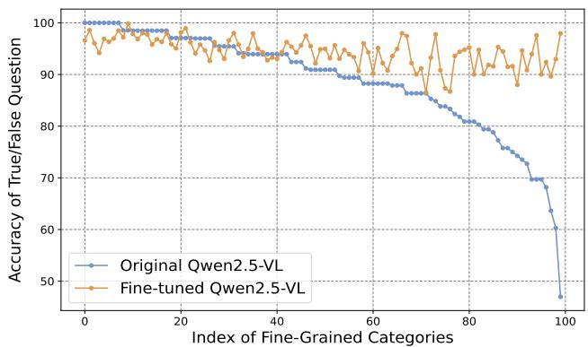
Benchmarking Large Vision-Language Models on Fine-Grained Image Tasks: From Evaluation to Diagnosis
中高相关；详见方法、贡献和实验边界。
方法：用 feature-level visual discriminability 诊断 LVLM 细粒度图像失败，适合做表征评测读物
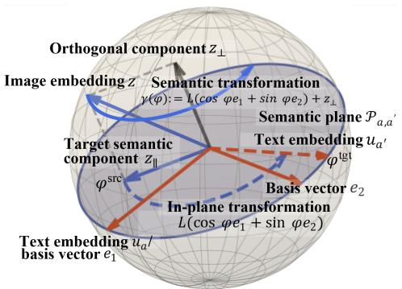
Semantic Robustness Certification for Vision-Language Models
中高相关；详见方法、贡献和实验边界。
方法：把 VLM 鲁棒性认证从像素/几何扰动推进到语义扰动，和开放词表视觉表征边界有关
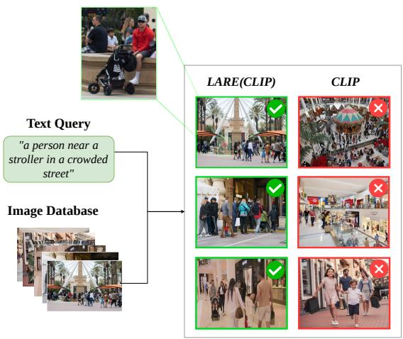
LARE: Low-Attention Region Encoding for Text-Image Retrieval
中相关；详见方法、贡献和实验边界。
方法：低注意力区域编码提醒视觉 encoder 的 salience bias 会损害细粒度检索
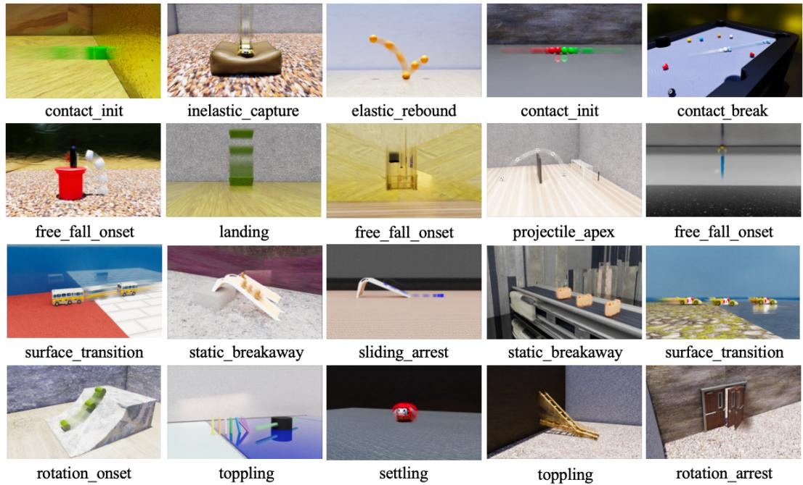
APT: Atomic Physical Transitions for Causal Video-Language Understanding
中相关；详见方法、贡献和实验边界。
方法：把视频事件拆成可见线索与物理机制绑定的 atomic transitions，适合扫读视频表征
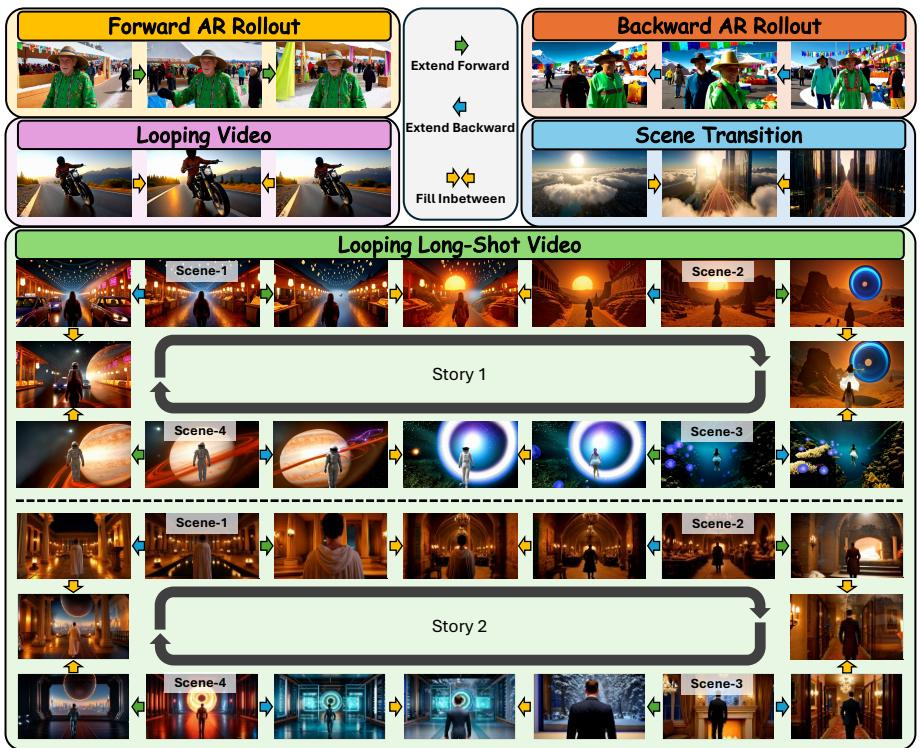
UniTemp: Unlocking Video Generation in Any Temporal Order via Bidirectional Distillation
中相关；详见方法、贡献和实验边界。
方法：任意时间顺序视频生成和 bidirectional distillation 对视频 latent 建模有间接参考
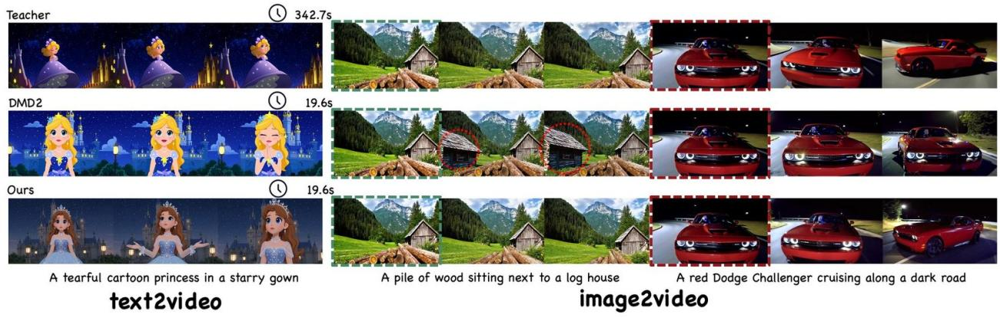
Data-Forcing Distillation: Restoring Diversity and Fidelity in Few-Step Video Generation
中相关；详见方法、贡献和实验边界。
方法：用 teacher score discrepancy 修复 few-step video distillation 的 mode collapse，偏生成但和蒸馏稳定性相关